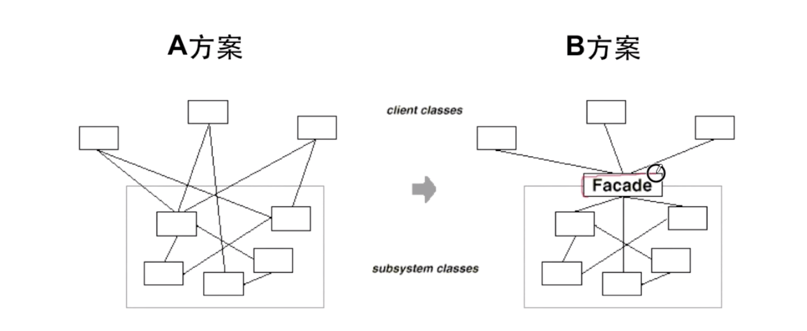
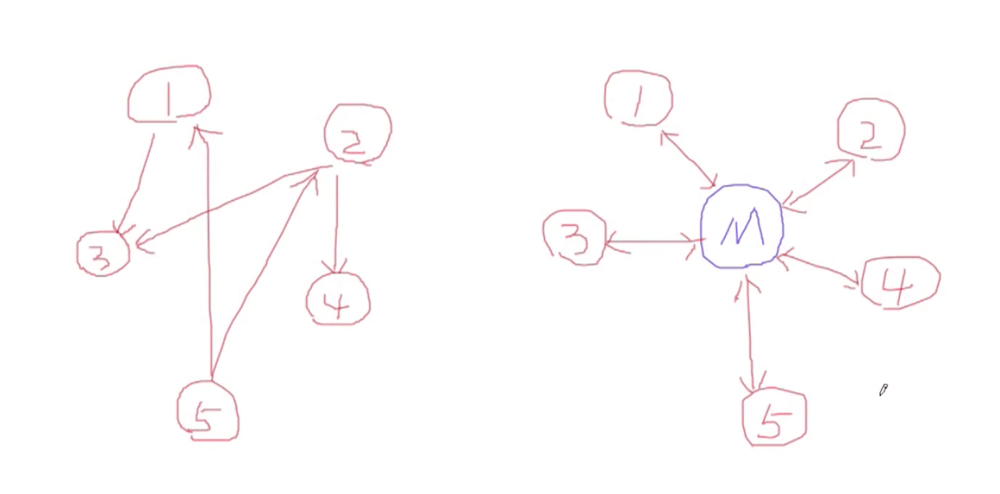

“接口隔离类”设计模式（C++）
在组件构建过程中，某些接口之间直接的依赖常常会带来很多问题、甚至根本无法实现。采用“添加一层间接（稳定）接口，来隔离本来相互紧密关联的接口”是一种常见的解决方案。
门面模式（Facade）

上述 A 方案的问题在于组件的客户和组件中各种复杂的子系统有了过多的耦合，随着外部客户程序和各子系统的演化，这种过多的耦合面临很多变化的挑战。如何简化外部客户程序和系统间的交互接口？如何将外部客户程序的演化和内部子系统的变化之间的依赖相互解耦？
模式定义：为子系统中的一组接口提供一个一致（稳定）的界面，Facade 模式定义了一个高层接口，这个接口使得这一子系统更加容易使用（复用）。
总结：
- 从客户程序的角度来看，Facade 模式简化了整个组件系统的接口，对于组件内部与外部客户程序来说，达到了一种“解耦”的效果 —— 内部子系统的任何变化不会影响到 Facade 接口的变化；
- Facade 设计模式更注重从架构的层次去看整个系统，而不是单个类的层次。Facade 很多时候更是一种架构设计模式；
- Facade 模式并非一个集装箱，可以任意地放进任何多个对象。该模式中组件的内部应该是“互相耦合关系比较大的一系列组件”，而不是一个简单的功能集合；
代理模式（Proxy）
在面向对象系统中，有些对象由于某种原因（比如对象创建的开销很大，或者某些操作需要安全控制，或者需要进程外的访问等），直接访问会给使用者、或者系统结构带来很多麻烦。如何在不失去透明操作对象的同时来管理/控制这些对象特有的复杂性？增加一层间接层是软件开发中常见的解决方案。

模式定义：为其他对象提供一种代理以控制（隔离、使用接口）对这个对象的访问。
总结：
- “增加一层间接层”是软件系统中对许多复杂问题的一种常见解决方法。在面向对象系统中，直接使用某些对象会带来很多问题，作为间接层的 Proxy 对象便是解决这一问题的常用手段；
- 具体 Proxy 设计模式的实现方法、实现粒度都相差很大，有些可能对单个对象做细粒度的控制，如 COW 技术，有些可能对组件模块提供抽象代理层，在架构层次对对象做 Proxy；
- Proxy 并不一定要求保持接口完整的一致性，只要能够实现间接控制，有时损及一些透明性也是可以接受的；
适配器模式（Adapter）
在软件系统中，由于应用环境的变化，常常需要将“一些现存的对象”放在新的环境中应用，但是新环境要求的接口是这些现存对象所不满足的。如何应对这这种“迁移的变化”？如何既能够利用现有对象的良好实现，同时又能够满足新的应用环境所要求的接口？
模式定义：将一个类的接口转换成客户希望的另一个接口。Adapter 模式使得原本由于接口不兼容而不能一起工作的那些类可以一起工作。
struct Target {
virtual void foo() = 0;
};
struct Adaptee { // 需要被代理的接口（通常为老接口）；
virtual void foo(int data) = 0;
virtual int bar() = 0;
};
struct AdapteeA : public Adaptee { // 需要被代理的实现；
virtual void foo(int data) {
std::cout << "[Adaptee A] " << data << std::endl;
};
int bar() {
return static_cast<int>('A');
};
};
struct Adapter : public Target {
Adapter(std::shared_ptr<Adaptee> pAdaptee) : pAdaptee(pAdaptee) {}
void foo() {
pAdaptee->foo(pAdaptee->bar()); // 代理细节；
}
protected:
std::shared_ptr<Adaptee> pAdaptee;
};
int main(int argc, char** argv) {
auto target = std::make_shared<Adapter>(
std::make_shared<AdapteeA>());
target->foo();
return 0;
}总结：
- Adapter 模式主要应用于“希望复用一些现存的类，但是接口又与复用环境要求不一致的情况”，在遗留代码复用、类库迁移等方面非常有用；
- GoF23 定义了两种 Adapter 模式的实现结构：对象适配器和类适配器。但类适配器采用“多继承”的实现方式，一般不推荐使用。对象适配器采用“对象组合”的方式，更符合松耦合精神。
- Adapter 模式可以实现的非常灵活，不必拘泥于 GoF23 中定义的两种结构。例如：完全可以将 Adapter 模式中的“现存对象”作为新的接口方法参数，来达到适配的目的；
中介者模式（Mediator）
在软件构建过程中，经常会出现多个对象互相关联交互的情况，对象之间常常会维持一种复杂的引用关系，如果遇到一些需求的更改，这种直接的引用关系将面临不断的变化。在这种情况下，我们可以使用一个“中介对象”来管理对象间的关联关系，避免相互交互的对象之间的紧耦合引用关系，从而更好地抵御变化。

模式定义：用一个中介对象来封装（封装变化）一系列的对象交互。中介者使各对象不需要显式的相互引用（编译时依赖 -> 运行时依赖），从而使其耦合松散（管理变化），而且可以独立地改变它们之间的交互。
总结：
- 将多个对象间复杂的关联关系解耦，Mediator 模式将多个对象间的控制逻辑关系集中管理，变“多个对象互相关联”为“多个对象和一个中介者关联”，简化了系统的维护，抵御了可能的变化；
- 随着控制逻辑的复杂化，Mediator 具体对象的实现可能相当复杂。这时候可以对 Mediator 对象进行分解处理；
- Facade 模式是解耦系统间（单向）的对象关联关系；Mediator 模式是解耦系统内各个对象之间（双向）的关联关系；
- Facade：解决系统内和系统外的接口隔离（接口对接口）问题；
- Proxy：解决由于某种原因（性能、安全、分布式等）导致两个对象无法直接访问；
- Adapter：老接口和新接口的兼容；
- Mediator：对多个对象间复杂调用关系的解耦；